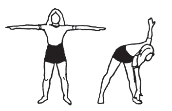

3- AYAĞA UZANMA: Ayaklarınızı yarım metre açın, kollarınızı omuz hizasında yana uzatın.
Dirseklerinizi gerin, avuçlarınızın içi yere baksın. Sola doğru dönün ve sağ elinizle dizlerinizi bükmeden sol ayağınıza değmeye çalışın.
Başlangıç durumuna geri dönün. Aynı hareketi sağ tarafa yapın.
Her iki tarafa acele etmeden 5’er defa tekrarlayın.